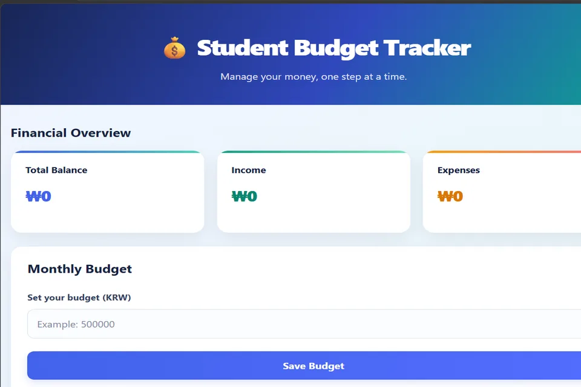

Student: Pandey Aayush · Student ID: 202537201
Project: Student Budget Tracker · Web Programming
1. Purpose of the test page
This page demonstrates how performance metrics, image loading options, and JavaScript loading choices relate to the Student Budget Tracker. The score values in the practice overview below are the separate example values in the supplied exercise page; they are not the official deployed-site Lighthouse scores shown in Task 1.
2. Performance test results · Practice example
Example difference: +18 points. These values are retained from the provided performance test exercise, not the official site result.
Worst metric in the practice example
The supplied exercise identifies unsized images as a likely cause: the browser does not reserve image space before download, so nearby page elements may move when images appear.
The after-optimization CLS value was not supplied in the source exercise and is not invented here.
Optimization checklist
- Add width and height attributes to reserve image space.
- Use loading="lazy" for below-the-fold images.
- Use decoding="async" where appropriate.
- Use fetchpriority="high" for the main above-the-fold image only when it is the likely LCP resource.
- Use defer for scripts that do not need to execute before parsing completes.
Conclusion
The practice example illustrates how dimensions, lazy loading, image decoding and deferred JavaScript can influence page loading. The actual Student Budget Tracker report is documented separately with the supplied 100/100 official scores and 87 local test.
3. Image loading demonstration
The project preview below is given explicit dimensions to reserve layout space. It is also marked for asynchronous decoding. This first image is treated as an above-the-fold image, so it is not lazy-loaded.

The same asset is used in the image-format comparison task.
4. Before and after image markup
Before
No explicit dimensions to reserve space. The file format and file size are not selected responsively.
After
Dimensions reserve space and WebP can reduce transfer size where supported.